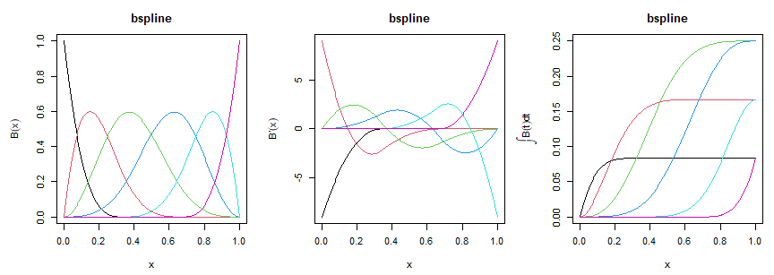

Every R package that fits smooth terms carries its own basis code, written inside the routine that needs it and exposing exactly what its author needed. A cubic B-spline is a fixed mathematical object, and it can be written once with everything a modelling routine could want already computed.
basis7 makes a basis an object that can be evaluated, differentiated to any order, integrated, and asked for its inner products. The last of these is what no other basis code carries: the Gram matrix is exactly what a roughness penalty integrates, and here it is exact rather than approximated on a grid.
It is the basis layer of statmodels7, an S7 toolkit for statistical modelling, alongside linkfunctions7, distributions7 and optimizers7.
Installation
# install.packages("pak")
pak::pak("statmodels7/basis7")Or the whole toolkit at once, which also installs the four sibling packages:
pak::pak("statmodels7/statmodels7")A basis is an object
b <- bspline_basis(lower = 0, upper = 1, dimension = 6, degree = 3)
b
#> Basis: bspline
#> Functions: 6 Variables: 1
#> Domain: [0, 1]
#> Parameters:
#> degree 3
#> knots 0.3333, 0.6667
#> boundary_knots 0, 1
#> Numerical: none
round(basis_eval(b, c(0, 0.25, 0.5, 1)), 4)
#> bs1 bs2 bs3 bs4 bs5 bs6
#> [1,] 1.0000 0.0000 0.0000 0.0000 0.0000 0
#> [2,] 0.0156 0.4570 0.4570 0.0703 0.0000 0
#> [3,] 0.0000 0.0312 0.4687 0.4687 0.0312 0
#> [4,] 0.0000 0.0000 0.0000 0.0000 0.0000 1The four generics answer in the same shape, so nothing downstream has to know which family it was given.
round(basis_deriv(b, 0.4, order = 2), 3)
#> bs1 bs2 bs3 bs4 bs5 bs6
#> [1,] 0 10.8 -16.2 2.7 2.7 0
round(basis_int(b, 0.4), 4)
#> bs1 bs2 bs3 bs4 bs5 bs6
#> [1,] 0.0833 0.1581 0.1298 0.0287 0 0
The integral is anchored
Its value at the lower endpoint is exactly zero, for every basis. Any antiderivative would satisfy a differentiation check, so leaving the constant free would let two bases disagree while both looked right.
basis_int(fourier_basis(lower = -1, upper = 3, dimension = 5), -1)
#> const sin1 cos1 sin2 cos2
#> [1,] 0 0 0 0 0Inner products, exactly
On each knot interval the integrand of the Gram matrix is a polynomial of known degree, so a Gauss-Legendre rule sized from that degree leaves no quadrature error. For a Fourier basis over a whole period the matrix is diagonal in closed form.
round(basis_gram(b, order = 2), 2)
#> bs1 bs2 bs3 bs4 bs5 bs6
#> bs1 324.0 -445.50 94.50 27.00 0.00 0.0
#> bs2 -445.5 648.00 -182.25 -30.37 10.12 0.0
#> bs3 94.5 -182.25 121.50 -30.38 -30.37 27.0
#> bs4 27.0 -30.37 -30.38 121.50 -182.25 94.5
#> bs5 0.0 10.12 -30.37 -182.25 648.00 -445.5
#> bs6 0.0 0.00 27.00 94.50 -445.50 324.0
round(basis_gram(fourier_basis(dimension = 5), order = 1), 4)
#> const sin1 cos1 sin2 cos2
#> const 0 0.0000 0.0000 0.0000 0.0000
#> sin1 0 19.7392 0.0000 0.0000 0.0000
#> cos1 0 0.0000 19.7392 0.0000 0.0000
#> sin2 0 0.0000 0.0000 78.9568 0.0000
#> cos2 0 0.0000 0.0000 0.0000 78.9568The point of the matrix is that is the integral of the squared -th derivative of the function the coefficients describe:
Every transform of a basis is one linear map
Orthonormalisation, an identifiability constraint and the Demmler-Reinsch construction are the same operation, , so they share one class. Derivatives and integrals transform by the same , and the Gram matrix by congruence, so a parent with an exact Gram matrix passes its exactness on.
o <- orthonorm_basis(b)
round(basis_gram(o), 12)[1:4, 1:4]
#> on1 on2 on3 on4
#> on1 1 0 0 0
#> on2 0 1 0 0
#> on3 0 0 1 0
#> on4 0 0 0 1dr_basis() builds the basis that diagonalises the empirical inner product and the penalty at once, and is empirically orthogonal to a constant and to the covariate. It factorises the penalty and not the design, so it survives a design that has lost rank, which equally spaced knots produce whenever the data leave a knot span empty:
x <- sort(c(seq(0, 0.25, length.out = 120), seq(0.78, 1, length.out = 120)))
wide <- bspline_basis(dimension = 14)
c(dimension = wide@dimension, rank = qr(basis_eval(wide, x))$rank)
#> dimension rank
#> 14 12
d <- dr_basis(wide, x)
z <- basis_eval(d, x)
c(
off_diagonal = max(abs(crossprod(z)[upper.tri(crossprod(z))])),
orthogonal_to_1_and_x = max(abs(crossprod(cbind(1, x), z)))
)
#> off_diagonal orthogonal_to_1_and_x
#> 3.108624e-14 7.571721e-14Several variables, without building the product
tensor_basis() multiplies bases, one per variable. The product separates, so the Gram matrix is the Kronecker product of the marginal ones and stays exact however many variables there are:
t2 <- tensor_basis(bspline_basis(dimension = 4), fourier_basis(dimension = 3))
t2
#> Basis: tensor(bspline, fourier)
#> Functions: 12 Variables: 2
#> Domain: [0, 1] x [0, 1]
#> Parameters:
#> marginal_dimensions 4, 3
#> Numerical: none
max(abs(basis_gram(t2) - kronecker(
basis_gram(bspline_basis(dimension = 4)),
basis_gram(fourier_basis(dimension = 3))
)))
#> [1] 0The design matrix, on the other hand, grows as the product of the marginal dimensions, and that is what makes interactions expensive. basis_contract() computes the values the coefficients describe from the marginal evaluations alone. Given the coefficients as factor matrices, the cost is linear in the number of variables rather than exponential in it:
big <- tensor_basis(rep(list(bspline_basis(dimension = 10)), 6))
big@dimension # the design matrix would have this many columns
#> [1] 1000000
set.seed(2)
x <- matrix(runif(1000 * 6), 1000, 6)
gamma <- replicate(6, matrix(rnorm(10 * 4), 10, 4), simplify = FALSE)
head(basis_contract(big, x, gamma), 3)
#> [1] 0.001117661 0.066648067 0.003906074A user-defined basis needs only its evaluation
Everything else has a numerical method registered on the base class, so a new basis is a subclass and one method. Derivatives use a single finite-difference stencil, never a chain of first differences.
Bumps <- S7::new_class("Bumps", parent = basis)
S7::method(basis_eval, Bumps) <- function(basis, x, ...) {
out <- exp(-0.5 * outer(x, basis@basis_params$centres, "-")^2 / 0.15^2)
colnames(out) <- basis_colnames(basis)
out
}
bumps <- Bumps(
basis_name = "bumps", dimension = 5L, lower = 0, upper = 1,
basis_params = list(centres = seq(0.1, 0.9, length.out = 5))
)
# never implemented, yet available
round(basis_deriv(bumps, 0.5, order = 1), 4)
#> bu1 bu2 bu3 bu4 bu5
#> [1,] -0.5078 -3.6543 0 3.6543 0.5078
round(basis_int(bumps, 1), 4)
#> bu1 bu2 bu3 bu4 bu5
#> [1,] 0.2811 0.3674 0.3757 0.3674 0.2811Validating a basis
check_basis() runs six numerical checks: the shapes and column names, the derivatives against finite differences, the integral differentiating back and vanishing at the lower endpoint, the partition of unity where the family claims it, the Gram matrix against an independent quadrature, and missing values travelling through.
A quantity that came from a fallback is reported as unchecked, not as passed. Comparing it with a numerical reference would be the same arithmetic twice, agreeing however wrong the basis is.
invisible(check_basis(b))
#> check_basis: bspline (6 functions)
#> shape shapes and column names [PASSED]
#> deriv derivatives against finite differences [PASSED]
#> integral integral differentiates back, zero at lower [PASSED]
#> partition partition of unity [PASSED]
#> gram Gram symmetric, PSD, matches quadrature [PASSED]
#> missing missing values give missing rows [PASSED]
invisible(check_basis(bumps))
#> check_basis: bumps (5 functions)
#> shape shapes and column names [PASSED]
#> deriv derivatives against finite differences [numerical]
#> integral integral differentiates back, zero at lower [numerical]
#> partition partition of unity [not claimed]
#> gram Gram symmetric, PSD, matches quadrature [PASSED]
#> missing missing values give missing rows [PASSED]
#> computed numerically: basis_deriv, basis_int, basis_gramWhat is in the box
| families |
bspline_basis(), fourier_basis(), poly_basis()
|
| several variables |
tensor_basis(), basis_contract(), basis_nvar()
|
| generics |
basis_eval(), basis_deriv(), basis_int(), basis_gram(), basis_colnames()
|
| transforms |
orthonorm_basis(), constrain_basis(), dr_basis()
|
| tools |
check_basis(), basis_is_numerical(), print(), plot()
|
Related
- linkfunctions7 — link functions with exact derivatives to fourth order
- distributions7 — distributions carrying exact derivatives of the log-likelihood
- optimizers7 — optimisation algorithms and stopping rules as objects
- the book — the mathematics behind the toolkit